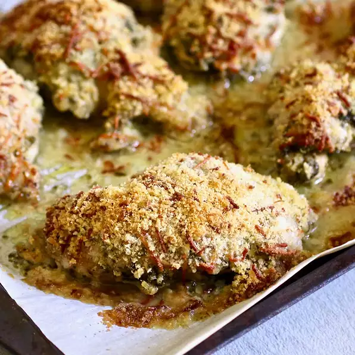

Crunchy Baked Pesto Chicken Thighs

Description
Easy and flavorful baked chicken thighs amped up with pesto!
Ingredients
- ½ cup panko bread crumbs
- ½ cup Parmesan cheese, grated
- ½ tablespoon olive oil
- ¼ teaspoon salt
- ¼ teaspoon pepper
- 1 pound boneless, skinless chicken thighs
- 3 tablespoons prepared pesto
Steps to make recipe
- Preheat the oven to 450 degrees F (230 degrees C). Line a baking sheet with parchment paper.
- Combine panko, Parmesan cheese, olive oil, salt, and pepper in a bowl.
- Place chicken thighs onto the prepared baking sheet and coat each side with pesto. Press panko mixture onto chicken.
- Bake in the preheated oven until chicken is no longer pink in the center and the juices run clear, about 20 minutes. An instant-read thermometer inserted into the center should read at least 165 degrees F (74 degrees C).
Top Page
Main Page